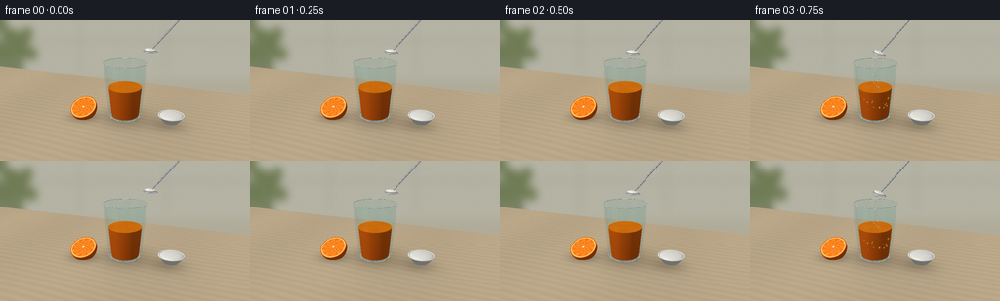
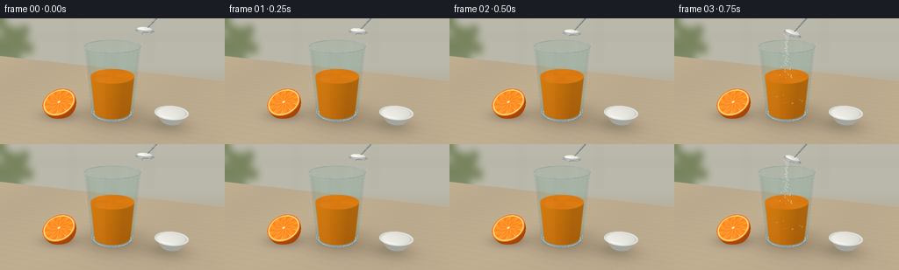
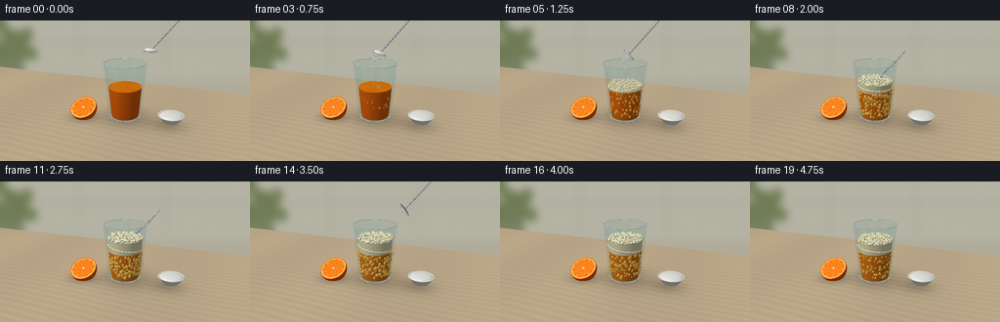
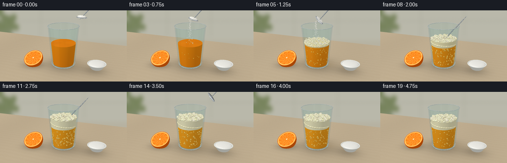

CODING AGENTS AS PIXEL WORLD MODELS
traex/GPT-6.1-Sol · phygen_150
点击播放 · 原生 RGB 像素
逐轮保存的候选
回放视频、检查图与代码变化。
每份候选均可单独播放。实际图片检查记录在下方工具轨迹中。
候选 01播放与检查图
点击播放 · 原生 RGB 像素


展开代码变化
--- 上一保存版本
+++ 本次保存版本
@@ -0,0 +1,369 @@
+import math
+from pathlib import Path
+import numpy as np
+from PIL import Image, ImageDraw, ImageFilter
+import artifact_io
+
+# A small, deterministic analytic renderer. All imagery is made here from geometry.
+ROOT=Path(__file__).resolve().parent
+S=3; W=256*S; H=144*S
+rng=np.random.default_rng(125)
+CAM=np.array([2.5,-6.5,3.35])
+TARGET=np.array([0.,0.,.89])
+F=TARGET-CAM; F/=np.linalg.norm(F)
+R=np.cross(F,[0,0,1.]); R/=np.linalg.norm(R)
+U=np.cross(R,F)
+focal=H/(2*np.tan(np.deg2rad(31)/2))
+yy,xx=np.mgrid[0:H,0:W]
+D=F[None,None,:]+((xx-W/2)/focal)[...,None]*R+((H/2-yy)/focal)[...,None]*U
+D/=np.linalg.norm(D,axis=2)[...,None]
+LIGHT=np.array([-3.,-4.,7.]); LIGHT/=np.linalg.norm(LIGHT)
+
+
+def project(p):
+ q=np.asarray(p)-CAM
+ den=q@F
+ return np.array([W/2+focal*(q@R)/den,H/2-focal*(q@U)/den])
+
+
+def environment(n,v):
+ ref=2*np.sum(n*v,axis=-1)[...,None]*n-v
+ # Broad window and narrow vertical softbox, a dark room band.
+ sky=np.clip(ref[...,2]*.6+.45,0,1)
+ env=np.stack([.44+.34*sky,.47+.31*sky,.49+.29*sky],-1)
+ window=np.exp(-((ref[...,0]+.5)/.28)**8-((ref[...,1]+.55)/.46)**8)
+ strip=np.exp(-((ref[...,0]-.65)/.085)**2-((ref[...,2]-.38)/.8)**4)
+ env+=window[...,None]*.54+strip[...,None]*.55
+ dark=np.exp(-((ref[...,0]-.05)/.22)**2-((ref[...,2]-.1)/.25)**2)
+ env*=1-dark[...,None]*.60
+ return np.clip(env,0,1.3)
+
+
+def shade(n,base,v,metal=0.,rough=.22):
+ lam=np.clip(np.sum(n*LIGHT,axis=-1),0,1)
+ diff=.50+.47*lam
+ base=np.asarray(base)
+ col=base*diff[...,None]
+ half=LIGHT+v; half/=np.linalg.norm(half,axis=-1)[...,None]
+ spec=np.clip(np.sum(n*half,axis=-1),0,1)**(70 if rough<.2 else 27)
+ col+=spec[...,None]*(.16 if metal<.5 else .5)
+ if metal:
+ col=(1-metal)*col+metal*environment(n,v)*base
+ return np.clip(col,0,1)
+
+class Render:
+ def __init__(self, col, dep):
+ self.col=col.copy(); self.dep=dep.copy()
+ def put(self,t,n,base,mask=None,metal=0,rough=.23):
+ m=(t>0)&(t<self.dep)
+ if mask is not None:m &= mask
+ if not np.any(m):return
+ colors=shade(n[m],base[m] if isinstance(base,np.ndarray) and base.ndim==3 else base,-D[m],metal,rough)
+ self.col[m]=colors;self.dep[m]=t[m]
+ def cone(self,cx,cy,z0,z1,r0,r1,color,top=True,metal=0):
+ k=(r1-r0)/(z1-z0);b=r0-k*z0
+ ox=CAM[0]-cx;oy=CAM[1]-cy;oz=CAM[2]
+ a=D[...,0]**2+D[...,1]**2-(k*D[...,2])**2
+ bb=2*(ox*D[...,0]+oy*D[...,1]-(k*oz+b)*k*D[...,2])
+ cc=ox*ox+oy*oy-(k*oz+b)**2
+ disc=bb*bb-4*a*cc
+ root=np.sqrt(np.maximum(0,disc))
+ ts=[(-bb-root)/(2*a),(-bb+root)/(2*a)]
+ for t in ts:
+ p=CAM+D*t[...,None]
+ valid=(disc>=0)&(p[...,2]>=z0)&(p[...,2]<=z1)
+ n=np.stack([p[...,0]-cx,p[...,1]-cy,-k*(k*p[...,2]+b)],-1)
+ n/=np.maximum(np.linalg.norm(n,axis=-1)[...,None],1e-9)
+ co=color(p,n,False) if callable(color) else color
+ self.put(t,n,co,valid,metal)
+ if top:
+ t=(z1-CAM[2])/D[...,2];p=CAM+D*t[...,None]
+ valid=((p[...,0]-cx)**2+(p[...,1]-cy)**2)<=r1*r1
+ n=np.zeros_like(D);n[...,2]=1
+ co=color(p,n,True) if callable(color) else color
+ self.put(t,n,co,valid,metal)
+ def ellipsoid(self,c,axes,color,orient=None,clip=None,metal=0,rough=.2):
+ c=np.asarray(c,dtype=float);axes=np.asarray(axes)
+ Q=np.eye(3) if orient is None else orient
+ # Bounding rectangle keeps the bubbly liquid inexpensive to render.
+ radius=np.max(axes)
+ pc=project(c);distance=np.dot(c-CAM,F)
+ rad=focal*radius/max(.1,distance-radius)*1.55+3
+ x0=max(0,int(pc[0]-rad));x1=min(W,int(pc[0]+rad)+1)
+ y0=max(0,int(pc[1]-rad));y1=min(H,int(pc[1]+rad)+1)
+ if x1<=x0 or y1<=y0:return
+ sl=np.s_[y0:y1,x0:x1];d=D[sl]
+ o=((CAM-c)@Q)/axes;dd=(d@Q)/axes
+ aa=np.sum(dd*dd,-1);bb=2*np.sum(dd*o,-1);cc=np.sum(o*o)-1
+ dis=bb*bb-4*aa*cc
+ for sign in [-1,1]:
+ t=(-bb+sign*np.sqrt(np.maximum(0,dis)))/(2*aa)
+ m=(dis>=0)&(t>0)&(t<self.dep[sl])
+ if not m.any():continue
+ p=CAM+d*t[...,None]
+ if clip is not None:m &= clip(p)
+ if not m.any():continue
+ n=(((p-c)@Q)/(axes*axes))@Q.T
+ n/=np.maximum(1e-9,np.linalg.norm(n,axis=-1)[...,None])
+ base=color(p,n) if callable(color) else color
+ col=shade(n[m],base[m] if isinstance(base,np.ndarray) and base.ndim==3 else base,-d[m],metal,rough)
+ self.col[sl][m]=col;self.dep[sl][m]=t[m]
+ def disc(self,c,n,r,color):
+ c=np.asarray(c);n=np.asarray(n);n/=np.linalg.norm(n)
+ t=np.dot(c-CAM,n)/np.sum(D*n,axis=-1)
+ p=CAM+D*t[...,None]
+ m=np.sum((p-c)**2,-1)<r*r
+ nn=np.broadcast_to(n,D.shape)
+ base=color(p,n) if callable(color) else color
+ self.put(t,nn,base,m)
+
+# A defocused warm kitchen background and an oak worktop.
+tfloor=-CAM[2]/D[...,2]
+P=CAM+D*tfloor[...,None]
+wallmask=(P[...,1]>3.6)|(tfloor<0)
+bg=np.zeros((H,W,3),float)
+grains=(.48*np.sin(26*P[...,1]+1.6*np.sin(P[...,0]*.8))+.24*np.sin(117*P[...,1]+3*np.sin(P[...,0]*1.4))+.12*np.sin(440*P[...,1]+5*np.sin(P[...,0]*2)))
+noise=rng.normal(0,.007,(H,W))
+wood=np.stack([.73+.022*grains+noise,.655+.024*grains+noise,.535+.028*grains+noise],-1)
+wood*= (.99-.015*np.sin(P[...,0]*1.3))[...,None]
+# Physically anchored soft contact shadows.
+shadow=np.exp(-(P[...,0]**2/.53+(P[...,1]-.12)**2/.42))*.29
+shadow+=np.exp(-((P[...,0]+1.24)**2/.17+(P[...,1]+.35)**2/.12))*.29
+shadow+=np.exp(-((P[...,0]-1.30)**2/.21+(P[...,1]-.05)**2/.17))*.20
+wood*=1-shadow[...,None]
+caustic=np.exp(-((P[...,0]-.32)**2/.13+(P[...,1]-.3)**2/.12))*.045
+wood+=caustic[...,None]*np.array([1,.66,.14])
+back=Image.new('RGB',(W,H),(177,172,154));bd=ImageDraw.Draw(back)
+bd.rectangle((0,0,W,H*.42),fill=(180,179,164))
+# blurred backsplash joints and a very soft leafy shape, outside the subject.
+for x in [20,245,510,770]:bd.line((x,0,x,H*.36),fill=(154,156,143),width=3)
+bd.line((0,H*.15,W,H*.15),fill=(154,157,145),width=3)
+bd.rounded_rectangle((-35,H*.14,72,H*.42),radius=16,fill=(120,130,99))
+for i in range(17):
+ x=int(rng.uniform(-30,85));y=int(rng.uniform(-20,90));bd.ellipse((x,y,x+30,y+42),fill=(112,124,85))
+back=np.asarray(back.filter(ImageFilter.GaussianBlur(12)),float)/255
+bg[:]=np.where(wallmask[...,None],back,wood)
+base_depth=np.where(wallmask,100.,tfloor)
+
+# Cup dimensions, in meters up to a common arbitrary scale.
+Z0=.11; Z1=1.72; RB=.485; RT=.61
+K=(RT-RB)/(Z1-Z0)
+def cup_r(z):return RB+K*(z-Z0)
+
+# Precalculate intersections used for glass, including its clear bottom.
+ox=CAM[0];oy=CAM[1];b=RB-K*Z0
+a=D[...,0]**2+D[...,1]**2-(K*D[...,2])**2
+bb=2*(ox*D[...,0]+oy*D[...,1]-(K*CAM[2]+b)*K*D[...,2]);cc=ox*ox+oy*oy-(K*CAM[2]+b)**2
+dis=bb*bb-4*a*cc
+near=(-bb-np.sqrt(np.maximum(dis,0)))/(2*a)
+far=(-bb+np.sqrt(np.maximum(dis,0)))/(2*a)
+
+def glass_side(scene,t,back=False):
+ p=CAM+D*t[...,None]
+ mask=(dis>0)&(p[...,2]>=Z0)&(p[...,2]<=Z1)&(t>0)&(t<scene.dep+.08)
+ n=np.stack([p[...,0],p[...,1],-K*cup_r(p[...,2])],-1)
+ n/=np.maximum(1e-8,np.linalg.norm(n,axis=-1)[...,None])
+ nv=np.abs(np.sum(n*-D,axis=-1))
+ fres=.028+.75*(1-nv)**5
+ refl=environment(n,-D)
+ # Window edge streaks and a small blue-green tint of real transparent glass.
+ tint=np.array([.94,.983,.98])
+ alpha=fres*(.52 if back else .72)
+ # slight vertical refraction of what lies behind the glass
+ shift=(np.sum(n*R,axis=-1)*2.3*S).astype(int)
+ xr=np.clip(xx+shift,0,W-1)
+ refr=scene.col[yy,xr]*tint
+ out=refr*(1-alpha[...,None])+refl*alpha[...,None]
+ scene.col[mask]=out[mask]
+
+def ring(scene,z,r,thickness,color,glass=True):
+ # toroidal rim made of individually analytic small ellipsoids
+ for ang in np.linspace(0,2*np.pi,160,endpoint=False):
+ c=[r*np.cos(ang),r*np.sin(ang),z]
+ tangent=np.array([-np.sin(ang),np.cos(ang),0])
+ radial=np.array([np.cos(ang),np.sin(ang),0])
+ q=np.column_stack([tangent,radial,[0,0,1]])
+ scene.ellipsoid(c,[r*np.pi/160*1.22,thickness,thickness*.68],color,orient=q,metal=.65 if glass else 0)
+
+# Orange's exposed segments are shaded and textured directly on a 3D cut plane.
+oc=np.array([-1.25,-.29,.29]);on=np.array([0,-.52,.854]);on/=np.linalg.norm(on)
+ou=np.array([1.,0,0]);ov=np.cross(on,ou)
+def orange_skin(p,n):
+ q=p-oc
+ tex=np.sin(q[...,0]*150)*np.sin(q[...,1]*173)*np.sin(q[...,2]*145)
+ return np.stack([.91+.025*tex,.35+.024*tex,.022+.008*tex],-1)
+def orange_face(p,n):
+ q=p-(oc+.025*on)
+ x=q@ou;y=q@ov;rr=np.sqrt(x*x+y*y);ang=np.arctan2(y,x)
+ seg=np.sin(ang*5.0+.11)
+ cells=np.sin(x*110+3*np.sin(y*25))*np.sin(y*130+2*np.sin(x*35))
+ bright=.018*cells+.022*np.sin(ang*10+rr*22)
+ col=np.stack([.98+bright,.48+bright*2,.055+bright],-1)
+ mem=(np.abs(seg)<.055)&(rr<.342)
+ rind=rr>.349
+ col[mem]=[1.,.84,.48]
+ col[rind]=[.99,.80,.38]
+ outer=rr>.382;col[outer]=[.96,.38,.02]
+ core=rr<(.034+.007*np.cos(ang*10));col[core]=[1,.9,.66]
+ return col
+
+# Hundreds of tiny stable bubble locations for a cohesive evolving reaction.
+bubble_params=[]
+for i in range(330):
+ ang=rng.uniform(0,2*np.pi);rad=np.sqrt(rng.uniform(.0,1))*.53
+ bubble_params.append((rad*np.cos(ang),rad*np.sin(ang),rng.uniform(.015,.047),rng.uniform(0,1),rng.uniform(.5,1.5)))
+foam_params=[]
+for i in range(570):
+ a0=rng.uniform(0,2*np.pi);rad=np.sqrt(rng.uniform(0,1))*.55
+ foam_params.append((rad*np.cos(a0),rad*np.sin(a0),rng.uniform(.014,.052),rng.uniform(0,1)))
+
+# Color mixing and white foam are not a fade: the evolving volumes stay in the cup.
+def render_frame(frame):
+ t=frame/4
+ s=Render(bg,base_depth)
+ s.ellipsoid(oc,[.405,.405,.405],orange_skin,clip=lambda p:((p-oc)@on<.025)&(p[...,2]>0))
+ s.disc(oc+.025*on,on,.402,orange_face)
+ # A small ceramic pinch bowl of baking soda on the worktop.
+ bx,by=1.35,.19
+ def bowlcol(p,n,top):
+ return [.88,.885,.85]
+ s.cone(bx,by,.045,.25,.22,.37,bowlcol,top=False)
+ s.ellipsoid([bx,by,.239],[.337,.337,.069],[.95,.945,.915],clip=lambda p:p[...,2]>.21)
+ # rim, drawn as short polished ceramic arcs
+ for ang in np.linspace(0,2*np.pi,85,endpoint=False):
+ c=[bx+.358*np.cos(ang),by+.358*np.sin(ang),.25]
+ s.ellipsoid(c,[.023,.023,.012],[.92,.925,.895])
+ # Minute uneven grains on the baking soda heap.
+ rrng=np.random.default_rng(14)
+ for i in range(55):
+ x,y=rrng.uniform(-.28,.28,2)
+ if x*x+y*y<.078:
+ z=.241+.062*np.sqrt(max(0,1-(x*x+y*y)/.115))
+ s.ellipsoid([bx+x,by+y,z],[.008,.008,.006],[.98,.975,.95])
+ # Rear wall of the clear glass precedes opaque contents.
+ glass_side(s,far,True)
+ # A thick transparent glass foot, with the table visible through it.
+ tt=(.10-CAM[2])/D[...,2];pp=CAM+D*tt[...,None]
+ foot=(pp[...,0]**2+pp[...,1]**2<.49**2)&(tt>0)&(tt<s.dep)
+ s.col[foot]=s.col[foot]*.87+np.array([.17,.19,.18])*.25
+ ring(s,.116,.471,.015,[.80,.85,.83])
+ # Addition starts after a clear establishing moment. Maximum effervescence
+ # follows the addition; the very last frames show settling foam.
+ activity=np.clip((t-.6)/1.35,0,1)*np.exp(-max(t-3.2,0)*.40)
+ foam_amt=np.clip((t-.8)/1.9,0,1)
+ foam_amt*=1-.13*np.clip((t-3.4)/1.35,0,1)
+ liquid_z=1.025-.05*foam_amt
+ foam_top=liquid_z+.36*foam_amt
+ def juice(p,n,top):
+ cloudy=foam_amt
+ swirl=.5+.5*np.sin(np.arctan2(p[...,1],p[...,0])*3-p[...,2]*12+t*4)
+ tex=.010*np.sin(p[...,0]*220+p[...,1]*68)*np.sin(p[...,2]*210)
+ rimlight=np.clip(-n[...,0]*.28+n[...,1]*.11,0,.22)
+ if top:
+ col=np.stack([.95+.025*swirl,.475+.075*cloudy+.015*swirl,.045+.040*cloudy+tex],-1)
+ else:
+ depthshade=.045*(p[...,2]-.5)
+ col=np.stack([.92+depthshade+tex,.365+.10*cloudy+depthshade+tex,.028+.045*cloudy+tex*.5],-1)
+ col+=rimlight[...,None]*np.array([.17,.11,.026])
+ return col
+ s.cone(0,0,.16,liquid_z,cup_r(.16)-.033,cup_r(liquid_z)-.029,juice)
+ # Large CO2 bubbles rising through the juice, represented on the near layer.
+ for x,y,rad,phase,speed in bubble_params:
+ if activity<=.01:break
+ # bubble counts increase naturally, not all at once
+ if phase>activity:continue
+ z=.25+((phase+t*.58*speed)%1)*max(.1,liquid_z-.30)
+ radius=rad*(.65+.45*activity)
+ # Only the near wall bubbles are legible through opaque orange juice.
+ ang=np.arctan2(y,x)
+ r=cup_r(z)-.035
+ x2=r*np.cos(ang);y2=r*np.sin(ang)
+ if x2*CAM[0]+y2*CAM[1]<.0:continue
+ color=np.array([.99,.65+.08*foam_amt,.18+.13*foam_amt])
+ s.ellipsoid([x2,y2,z],[radius,radius,radius*1.15],color,metal=.10,rough=.17)
+ if foam_amt>.025:
+ def foamcolor(p,n,top):
+ und=.009*np.sin(p[...,0]*107)*np.sin(p[...,1]*91+p[...,2]*32)
+ col=np.stack([.97+und,.87+.038*foam_amt+und,.60+.145*foam_amt+und],-1)
+ return col
+ # An irregular foam volume forms above the orange liquid.
+ s.cone(0,0,liquid_z-.02,foam_top-.02,cup_r(liquid_z)-.03,cup_r(foam_top)-.033,foamcolor)
+ for x,y,rad,phase in foam_params:
+ rxy=np.hypot(x,y)
+ if rxy>cup_r(foam_top)-.035:continue
+ # Organic mound, finer at its edge, with slow heaving of bubble clusters.
+ z=foam_top+.027*(1-rxy/.57)+.010*np.sin(phase*31+t*2.2)+.018*np.sin(x*24+y*18+t*1.4)
+ r0=rad*(.52+.48*foam_amt)
+ col=[.985,.925+.018*np.sin(phase*12),.77+.04*np.cos(phase*19)]
+ s.ellipsoid([x,y,z],[r0,r0,r0*.70],col,metal=.04,rough=.20)
+ # Cellular bubbles along the frothy side wall, not a flat band.
+ for i in range(240):
+ phase=(i*.618033)%1; ang=i*2.399963
+ z=liquid_z+(.02+(foam_top-liquid_z-.02)*phase)
+ r=cup_r(z)-.035
+ x,y=r*np.cos(ang),r*np.sin(ang)
+ if x*CAM[0]+y*CAM[1]<0:continue
+ rad=.016+.020*((i*.371)%1)
+ s.ellipsoid([x,y,z],[rad,rad,rad*.85],[.98,.904,.716],metal=.02)
+ # A real spoon approaches, tips the powder in, briefly stirs, then leaves.
+ if frame<15:
+ if t<.60:
+ u=t/.6;sp=np.array([.75-.58*u,-.13,2.12-.10*u]);tilt=.04
+ elif t<1.65:
+ u=(t-.60)/1.05;sp=np.array([.17-.07*u,-.10,2.02-.08*u]);tilt=.15+1.05*u
+ elif t<3.0:
+ u=(t-1.65)/1.35;ang=u*2*np.pi*1.65
+ sp=np.array([.22*np.cos(ang),.22*np.sin(ang),.89+.025*np.sin(ang)]);tilt=1.15
+ else:
+ u=(t-3.0)/.5;sp=np.array([.18+.65*u,-.02,1.17+1.0*u]);tilt=.9
+ # Spoon length aimed right, away from cup and beyond the top edge.
+ axis=np.array([.70,.15,.83]);axis/=np.linalg.norm(axis)
+ tangent=np.cross(axis,[0,0,1]);tangent/=np.linalg.norm(tangent)
+ perpendicular=np.cross(tangent,axis)
+ Q=np.column_stack([axis,tangent,perpendicular])
+ # Long polished steel handle (rounded corners at this resolution).
+ hc=sp+axis*.76
+ s.ellipsoid(hc,[.86,.046,.019],[.79,.81,.82],orient=Q,metal=.93,rough=.12)
+ # Bowl broad direction and thin shell tilt with the pouring motion.
+ e1=np.array([np.cos(tilt),0,-np.sin(tilt)]);e2=np.array([0,1.,0]);e3=np.cross(e1,e2)
+ SQ=np.column_stack([e1,e2,e3])
+ s.ellipsoid(sp,[.20,.13,.024],[.86,.88,.89],orient=SQ,metal=.91,rough=.1)
+ amount=np.clip(1-(t-.65)/.88,0,1)
+ if amount>0:
+ c=sp+e3*.032
+ s.ellipsoid(c,[.16,.108,.045*amount],[.98,.975,.935],orient=SQ)
+ for j in range(25):
+ a0=j*2.4;r0=.125*np.sqrt((j+.5)/25)
+ c0=c+e1*r0*np.cos(a0)+e2*.75*r0*np.sin(a0)+e3*.028*amount
+ s.ellipsoid(c0,[.008,.008,.008],[.99,.98,.95])
+ if .65<t<1.60:
+ # White powder falls vertically; it scatters on contact and dissolves.
+ grng=np.random.default_rng(91)
+ for j in range(115):
+ f=(j/115+t*1.8)%1
+ z=sp[2]-.025-f*(sp[2]-liquid_z)
+ spread=.018+.046*f
+ x=sp[0]-.13+grng.normal(0,spread)
+ y=sp[1]+grng.normal(0,spread*.66)
+ rr=grng.uniform(.004,.012)
+ s.ellipsoid([x,y,z],[rr,rr,rr*1.3],[.995,.984,.93])
+ # Transparent front face is last, keeping reflections continuous over contents.
+ glass_side(s,near,False)
+ # Thin rolled rim, front/back line with real specular contours.
+ ring(s,Z1,RT,.012,[.81,.86,.85])
+ ring(s,.154,.485,.009,[.80,.85,.81])
+ # Tiny window highlights emphasize clear straight-sided glass without outlines.
+ col=np.clip(s.col,0,1)
+ # fixed, very fine sensor grain keeps material surfaces from being sterile
+ nr=np.random.default_rng(602).normal(0,.0013,(H,W,1))
+ col=np.clip(col+nr,0,1)
+ img=Image.fromarray(np.uint8(col*255)).resize((256,144),Image.Resampling.LANCZOS)
+ return np.asarray(img)
+
+if __name__=='__main__':
+ frames=[]
+ for i in range(20):
+ print('Rendering frame',i,flush=True)
+ frames.append(render_frame(i))
+ artifact_io.save(np.stack(frames),ROOT)
+ print('Saved 20 RGB frames.',flush=True)
候选 02播放与检查图
点击播放 · 原生 RGB 像素


展开代码变化
--- 上一保存版本
+++ 本次保存版本
@@ -13,7 +13,7 @@
F=TARGET-CAM; F/=np.linalg.norm(F)
R=np.cross(F,[0,0,1.]); R/=np.linalg.norm(R)
U=np.cross(R,F)
-focal=H/(2*np.tan(np.deg2rad(31)/2))
+focal=H/(2*np.tan(np.deg2rad(22)/2))
yy,xx=np.mgrid[0:H,0:W]
D=F[None,None,:]+((xx-W/2)/focal)[...,None]*R+((H/2-yy)/focal)[...,None]*U
D/=np.linalg.norm(D,axis=2)[...,None]
@@ -41,7 +41,7 @@
def shade(n,base,v,metal=0.,rough=.22):
lam=np.clip(np.sum(n*LIGHT,axis=-1),0,1)
- diff=.50+.47*lam
+ diff=.70+.29*lam
base=np.asarray(base)
col=base*diff[...,None]
half=LIGHT+v; half/=np.linalg.norm(half,axis=-1)[...,None]
@@ -124,7 +124,7 @@
bg=np.zeros((H,W,3),float)
grains=(.48*np.sin(26*P[...,1]+1.6*np.sin(P[...,0]*.8))+.24*np.sin(117*P[...,1]+3*np.sin(P[...,0]*1.4))+.12*np.sin(440*P[...,1]+5*np.sin(P[...,0]*2)))
noise=rng.normal(0,.007,(H,W))
-wood=np.stack([.73+.022*grains+noise,.655+.024*grains+noise,.535+.028*grains+noise],-1)
+wood=np.stack([.73+.006*grains+noise,.655+.007*grains+noise,.535+.008*grains+noise],-1)
wood*= (.99-.015*np.sin(P[...,0]*1.3))[...,None]
# Physically anchored soft contact shadows.
shadow=np.exp(-(P[...,0]**2/.53+(P[...,1]-.12)**2/.42))*.29
@@ -209,9 +209,9 @@
# Hundreds of tiny stable bubble locations for a cohesive evolving reaction.
bubble_params=[]
-for i in range(330):
+for i in range(175):
ang=rng.uniform(0,2*np.pi);rad=np.sqrt(rng.uniform(.0,1))*.53
- bubble_params.append((rad*np.cos(ang),rad*np.sin(ang),rng.uniform(.015,.047),rng.uniform(0,1),rng.uniform(.5,1.5)))
+ bubble_params.append((rad*np.cos(ang),rad*np.sin(ang),rng.uniform(.009,.030),rng.uniform(0,1),rng.uniform(.5,1.5)))
foam_params=[]
for i in range(570):
a0=rng.uniform(0,2*np.pi);rad=np.sqrt(rng.uniform(0,1))*.55
@@ -263,7 +263,7 @@
col=np.stack([.95+.025*swirl,.475+.075*cloudy+.015*swirl,.045+.040*cloudy+tex],-1)
else:
depthshade=.045*(p[...,2]-.5)
- col=np.stack([.92+depthshade+tex,.365+.10*cloudy+depthshade+tex,.028+.045*cloudy+tex*.5],-1)
+ col=np.stack([.98+depthshade+tex,.50+.085*cloudy+depthshade+tex,.030+.045*cloudy+tex*.5],-1)
col+=rimlight[...,None]*np.array([.17,.11,.026])
return col
s.cone(0,0,.16,liquid_z,cup_r(.16)-.033,cup_r(liquid_z)-.029,juice)
@@ -279,7 +279,7 @@
r=cup_r(z)-.035
x2=r*np.cos(ang);y2=r*np.sin(ang)
if x2*CAM[0]+y2*CAM[1]<.0:continue
- color=np.array([.99,.65+.08*foam_amt,.18+.13*foam_amt])
+ color=np.array([.99,.70+.05*foam_amt,.23+.10*foam_amt])
s.ellipsoid([x2,y2,z],[radius,radius,radius*1.15],color,metal=.10,rough=.17)
if foam_amt>.025:
def foamcolor(p,n,top):
@@ -353,7 +353,7 @@
ring(s,Z1,RT,.012,[.81,.86,.85])
ring(s,.154,.485,.009,[.80,.85,.81])
# Tiny window highlights emphasize clear straight-sided glass without outlines.
- col=np.clip(s.col,0,1)
+ col=np.clip(s.col,0,1)**.91
# fixed, very fine sensor grain keeps material surfaces from being sterile
nr=np.random.default_rng(602).normal(0,.0013,(H,W,1))
col=np.clip(col+nr,0,1)
可观测工具轨迹
实际执行的命令与返回图片。
命令 1exit 0
/bin/bash -lc 'ls -la && cat prompt.txt && cat GENERATION_RULES.md && cat task_spec.json'
命令 2exit 0
/bin/bash -lc "cat artifact_io.py && python - <<'PY'
import numpy,PIL
print('ok')
PY"命令 3exit 0
/bin/bash -lc "cat > generate.py <<'PY'
import math
from pathlib import Path
import numpy as np
from PIL import Image, ImageDraw, ImageFilter
import artifact_io
# A small, deterministic analytic renderer. All imagery is made here from geometry.
ROOT=Path(__file__).resolve().parent
S=3; W=256*S; H=144*S
rng=np.random.default_rng(125)
CAM=np.array([2.5,-6.5,3.35])
TARGET=np.array([0.,0.,.89])
F=TARGET-CAM; F/=np.linalg.norm(F)
R=np.cross(F,[0,0,1.]); R/=np.linalg.norm(R)
U=np.cross(R,F)
focal=H/(2*np.tan(np.deg2rad(31)/2))
yy,xx=np.mgrid[0:H,0:W]
D=F[None,None,:]+((xx-W/2)/focal)[...,None]*R+((H/2-yy)/focal)[...,None]*U
D/=np.linalg.norm(D,axis=2)[...,None]
LIGHT=np.array([-3.,-4.,7.]); LIGHT/=np.linalg.norm(LIGHT)
def project(p):
q=np.asarray(p)-CAM
den=q@F
return np.array([W/2+focal*(q@R)/den,H/2-focal*(q@U)/den])
def environment(n,v):
ref=2*np.sum(n*v,axis=-1)[...,None]*n-v
# Broad window and narrow vertical softbox, a dark room band.
sky=np.clip(ref[...,2]*.6+.45,0,1)
env=np.stack([.44+.34*sky,.47+.31*sky,.49+.29*sky],-1)
window=np.exp(-((ref[...,0]+.5)/.28)**8-((ref[...,1]+.55)/.46)**8)
strip=np.exp(-((ref[...,0]-.65)/.085)**2-((ref[...,2]-.38)/.8)**4)
env+=window[...,None]*.54+strip[...,None]*.55
dark=np.exp(-((ref[...,0]-.05)/.22)**2-((ref[...,2]-.1)/.25)**2)
env*=1-dark[...,None]*.60
return np.clip(env,0,1.3)
def shade(n,base,v,metal=0.,rough=.22):
lam=np.clip(np.sum(n*LIGHT,axis=-1),0,1)
diff=.50+.47*lam
base=np.asarray(base)
col=base*diff[...,None]
half=LIGHT+v; half/=np.linalg.norm(half,axis=-1)[...,None]
spec=np.clip(np.sum(n*half,axis=-1),0,1)**(70 if rough<.2 else 27)
col+=spec[...,None]*(.16 if metal<.5 else .5)
if metal:
col=(1-metal)*col+metal*environment(n,v)*base
return np.clip(col,0,1)
class Render:
def __init__(self, col, dep):
self.col=col.copy(); self.dep=dep.copy()
def put(self,t,n,base,mask=None,metal=0,rough=.23):
m=(t>0)&(t<self.dep)
if mask is not None:m &= mask
if not np.any(m):return
colors=shade(n[m],base[m] if isinstance(base,np.ndarray) and base.ndim==3 else base,-D[m],metal,rough)
self.col[m]=colors;self.dep[m]=t[m]
def cone(self,cx,cy,z0,z1,r0,r1,color,top=True,metal=0):
k=(r1-r0)/(z1-z0);b=r0-k*z0
ox=CAM[0]-cx;oy=CAM[1]-cy;oz=CAM[2]
a=D[...,0]**2+D[...,1]**2-(k*D[...,2])**2
bb=2*(ox*D[...,0]+oy*D[...,1]-(k*oz+b)*k*D[...,2])
cc=ox*ox+oy*oy-(k*oz+b)**2
disc=bb*bb-4*a*cc
root=np.sqrt(np.maximum(0,disc))
ts=[(-bb-root)/(2*a),(-bb+root)/(2*a)]
for t in ts:
p=CAM+D*t[...,None]
valid=(disc>=0)&(p[...,2]>=z0)&(p[...,2]<=z1)
n=np.stack([p[...,0]-cx,p[...,1]-cy,-k*(k*p[...,2]+b)],-1)
n/=np.maximum(np.linalg.norm(n,axis=-1)[...,None],1e-9)
co=color(p,n,False) if callable(color) else color
self.put(t,n,co,valid,metal)
if top:
t=(z1-CAM[2])/D[...,2];p=CAM+D*t[...,None]
valid=((p[...,0]-cx)**2+(p[...,1]-cy)**2)<=r1*r1
n=np.zeros_like(D);n[...,2]=1
co=color(p,n,True) if callable(color) else color
self.put(t,n,co,valid,metal)
def ellipsoid(self,c,axes,color,orient=None,clip=None,metal=0,rough=.2):
c=np.asarray(c,dtype=float);axes=np.asarray(axes)
Q=np.eye(3) if orient is None else orient
# Bounding rectangle keeps the bubbly liquid inexpensive to render.
radius=np.max(axes)
pc=project(c);distance=np.dot(c-CAM,F)
rad=focal*radius/max(.1,distance-radius)*1.55+3
x0=max(0,int(pc[0]-rad));x1=min(W,int(pc[0]+rad)+1)
y0=max(0,int(pc[1]-rad));y1=min(H,int(pc[1]+rad)+1)
if x1<=x0 or y1<=y0:return
sl=np.s_[y0:y1,x0:x1];d=D[sl]
o=((CAM-c)@Q)/axes;dd=(d@Q)/axes
aa=np.sum(dd*dd,-1);bb=2*np.sum(dd*o,-1);cc=np.sum(o*o)-1
dis=bb*bb-4*aa*cc
for sign in [-1,1]:
t=(-bb+sign*np.sqrt(np.maximum(0,dis)))/(2*aa)
m=(dis>=0)&(t>0)&(t<self.dep[sl])
if not m.any():continue
p=CAM+d*t[...,None]
if clip is not None:m &= clip(p)
if not m.any():continue
n=(((p-c)@Q)/(axes*axes))@Q.T
n/=np.maximum(1e-9,np.linalg.norm(n,axis=-1)[...,None])
base=color(p,n) if callable(color) else color
col=shade(n[m],base[m] if isinstance(base,np.ndarray) and base.ndim==3 else base,-d[m],metal,rough)
self.col[sl][m]=col;self.dep[sl][m]=t[m]
def disc(self,c,n,r,color):
c=np.asarray(c);n=np.asarray(n);n/=np.linalg.norm(n)
t=np.dot(c-CAM,n)/np.sum(D*n,axis=-1)
p=CAM+D*t[...,None]
m=np.sum((p-c)**2,-1)<r*r
nn=np.broadcast_to(n,D.shape)
base=color(p,n) if callable(color) else color
self.put(t,nn,base,m)
# A defocused warm kitchen background and an oak worktop.
tfloor=-CAM[2]/D[...,2]
P=CAM+D*tfloor[...,None]
wallmask=(P[...,1]>3.6)|(tfloor<0)
bg=np.zeros((H,W,3),float)
grains=(.48*np.sin(26*P[...,1]+1.6*np.sin(P[...,0]*.8))+.24*np.sin(117*P[...,1]+3*np.sin(P[...,0]*1.4))+.12*np.sin(440*P[...,1]+5*np.sin(P[...,0]*2)))
noise=rng.normal(0,.007,(H,W))
wood=np.stack([.73+.022*grains+noise,.655+.024*grains+noise,.535+.028*grains+noise],-1)
wood*= (.99-.015*np.sin(P[...,0]*1.3))[...,None]
# Physically anchored soft contact shadows.
shadow=np.exp(-(P[...,0]**2/.53+(P[...,1]-.12)**2/.42))*.29
shadow+=np.exp(-((P[...,0]+1.24)**2/.17+(P[...,1]+.35)**2/.12))*.29
shadow+=np.exp(-((P[...,0]-1.30)**2/.21+(P[...,1]-.05)**2/.17))*.20
wood*=1-shadow[...,None]
caustic=np.exp(-((P[...,0]-.32)**2/.13+(P[...,1]-.3)**2/.12))*.045
wood+=caustic[...,None]*np.array([1,.66,.14])
back=Image.new('RGB',(W,H),(177,172,154));bd=ImageDraw.Draw(back)
bd.rectangle((0,0,W,H*.42),fill=(180,179,164))
# blurred backsplash joints and a very soft leafy shape, outside the subject.
for x in [20,245,510,770]:bd.line((x,0,x,H*.36),fill=(154,156,143),width=3)
bd.line((0,H*.15,W,H*.15),fill=(154,157,145),width=3)
bd.rounded_rectangle((-35,H*.14,72,H*.42),radius=16,fill=(120,130,99))
for i in range(17):
x=int(rng.uniform(-30,85));y=int(rng.uniform(-20,90));bd.ellipse((x,y,x+30,y+42),fill=(112,124,85))
back=np.asarray(back.filter(ImageFilter.GaussianBlur(12)),float)/255
bg[:]=np.where(wallmask[...,None],back,wood)
base_depth=np.where(wallmask,100.,tfloor)
# Cup dimensions, in meters up to a common arbitrary scale.
Z0=.11; Z1=1.72; RB=.485; RT=.61
K=(RT-RB)/(Z1-Z0)
def cup_r(z):return RB+K*(z-Z0)
# Precalculate intersections used for glass, including its clear bottom.
ox=CAM[0];oy=CAM[1];b=RB-K*Z0
a=D[...,0]**2+D[...,1]**2-(K*D[...,2])**2
bb=2*(ox*D[...,0]+oy*D[...,1]-(K*CAM[2]+b)*K*D[...,2]);cc=ox*ox+oy*oy-(K*CAM[2]+b)**2
dis=bb*bb-4*a*cc
near=(-bb-np.sqrt(np.maximum(dis,0)))/(2*a)
far=(-bb+np.sqrt(np.maximum(dis,0)))/(2*a)
def glass_side(scene,t,back=False):
p=CAM+D*t[...,None]
mask=(dis>0)&(p[...,2]>=Z0)&(p[...,2]<=Z1)&(t>0)&(t<scene.dep+.08)
n=np.stack([p[...,0],p[...,1],-K*cup_r(p[...,2])],-1)
n/=np.maximum(1e-8,np.linalg.norm(n,axis=-1)[...,None])
nv=np.abs(np.sum(n*-D,axis=-1))
fres=.028+.75*(1-nv)**5
refl=environment(n,-D)
# Window edge streaks and a small blue-green tint of real transparent glass.
tint=np.array([.94,.983,.98])
alpha=fres*(.52 if back else .72)
# slight vertical refraction of what lies behind the glass
shift=(np.sum(n*R,axis=-1)*2.3*S).astype(int)
xr=np.clip(xx+shift,0,W-1)
refr=scene.col[yy,xr]*tint
out=refr*(1-alpha[...,None])+refl*alpha[...,None]
scene.col[mask]=out[mask]
def ring(scene,z,r,thickness,color,glass=True):
# toroidal rim made of individually analytic small ellipsoids
for ang in np.linspace(0,2*np.pi,160,endpoint=False):
c=[r*np.cos(ang),r*np.sin(ang),z]
tangent=np.array([-np.sin(ang),np.cos(ang),0])
radial=np.array([np.cos(ang),np.sin(ang),0])
q=np.column_stack([tangent,radial,[0,0,1]])
scene.ellipsoid(c,[r*np.pi/160*1.22,thickness,thickness*.68],color,orient=q,metal=.65 if glass else 0)
# Orange's exposed segments are shaded and textured directly on a 3D cut plane.
oc=np.array([-1.25,-.29,.29]);on=np.array([0,-.52,.854]);on/=np.linalg.norm(on)
ou=np.array([1.,0,0]);ov=np.cross(on,ou)
def orange_skin(p,n):
q=p-oc
tex=np.sin(q[...,0]*150)*np.sin(q[...,1]*173)*np.sin(q[...,2]*145)
return np.stack([.91+.025*tex,.35+.024*tex,.022+.008*tex],-1)
def orange_face(p,n):
q=p-(oc+.025*on)
x=q@ou;y=q@ov;rr=np.sqrt(x*x+y*y);ang=np.arctan2(y,x)
seg=np.sin(ang*5.0+.11)
cells=np.sin(x*110+3*np.sin(y*25))*np.sin(y*130+2*np.sin(x*35))
bright=.018*cells+.022*np.sin(ang*10+rr*22)
col=np.stack([.98+bright,.48+bright*2,.055+bright],-1)
mem=(np.abs(seg)<.055)&(rr<.342)
rind=rr>.349
col[mem]=[1.,.84,.48]
col[rind]=[.99,.80,.38]
outer=rr>.382;col[outer]=[.96,.38,.02]
core=rr<(.034+.007*np.cos(ang*10));col[core]=[1,.9,.66]
return col
# Hundreds of tiny stable bubble locations for a cohesive evolving reaction.
bubble_params=[]
for i in range(330):
ang=rng.uniform(0,2*np.pi);rad=np.sqrt(rng.uniform(.0,1))*.53
bubble_params.append((rad*np.cos(ang),rad*np.sin(ang),rng.uniform(.015,.047),rng.uniform(0,1),rng.uniform(.5,1.5)))
foam_params=[]
for i in range(570):
a0=rng.uniform(0,2*np.pi);rad=np.sqrt(rng.uniform(0,1))*.55
foam_params.append((rad*np.cos(a0),rad*np.sin(a0),rng.uniform(.014,.052),rng.uniform(0,1)))
# Color mixing and white foam are not a fade: the evolving volumes stay in the cup.
def render_frame(frame):
t=frame/4
s=Render(bg,base_depth)
s.ellipsoid(oc,[.405,.405,.405],orange_skin,clip=lambda p:((p-oc)@on<.025)&(p[...,2]>0))
s.disc(oc+.025*on,on,.402,orange_face)
# A small ceramic pinch bowl of baking soda on the worktop.
bx,by=1.35,.19
def bowlcol(p,n,top):
return [.88,.885,.85]
s.cone(bx,by,.045,.25,.22,.37,bowlcol,top=False)
s.ellipsoid([bx,by,.239],[.337,.337,.069],[.95,.945,.915],clip=lambda p:p[...,2]>.21)
# rim, drawn as short polished ceramic arcs
for ang in np.linspace(0,2*np.pi,85,endpoint=False):
c=[bx+.358*np.cos(ang),by+.358*np.sin(ang),.25]
s.ellipsoid(c,[.023,.023,.012],[.92,.925,.895])
# Minute uneven grains on the baking soda heap.
rrng=np.random.default_rng(14)
for i in range(55):
x,y=rrng.uniform(-.28,.28,2)
if x*x+y*y<.078:
z=.241+.062*np.sqrt(max(0,1-(x*x+y*y)/.115))
s.ellipsoid([bx+x,by+y,z],[.008,.008,.006],[.98,.975,.95])
# Rear wall of the clear glass precedes opaque contents.
glass_side(s,far,True)
# A thick transparent glass foot, with the table visible through it.
tt=(.10-CAM[2])/D[...,2];pp=CAM+D*tt[...,None]
foot=(pp[...,0]**2+pp[...,1]**2<.49**2)&(tt>0)&(tt<s.dep)
s.col[foot]=s.col[foot]*.87+np.array([.17,.19,.18])*.25
ring(s,.116,.471,.015,[.80,.85,.83])
# Addition starts after a clear establishing moment. Maximum effervescence
# follows the addition; the very last frames show settling foam.
activity=np.clip((t-.6)/1.35,0,1)*np.exp(-max(t-3.2,0)*.40)
foam_amt=np.clip((t-.8)/1.9,0,1)
foam_amt*=1-.13*np.clip((t-3.4)/1.35,0,1)
liquid_z=1.025-.05*foam_amt
foam_top=liquid_z+.36*foam_amt
def juice(p,n,top):
cloudy=foam_amt
swirl=.5+.5*np.sin(np.arctan2(p[...,1],p[...,0])*3-p[...,2]*12+t*4)
tex=.010*np.sin(p[...,0]*220+p[...,1]*68)*np.sin(p[...,2]*210)
rimlight=np.clip(-n[...,0]*.28+n[...,1]*.11,0,.22)
if top:
col=np.stack([.95+.025*swirl,.475+.075*cloudy+.015*swirl,.045+.040*cloudy+tex],-1)
else:
depthshade=.045*(p[...,2]-.5)
col=np.stack([.92+depthshade+tex,.365+.10*cloudy+depthshade+tex,.028+.045*cloudy+tex*.5],-1)
col+=rimlight[...,None]*np.array([.17,.11,.026])
return col
s.cone(0,0,.16,liquid_z,cup_r(.16)-.033,cup_r(liquid_z)-.029,juice)
# Large CO2 bubbles rising through the juice, represented on the near layer.
for x,y,rad,phase,speed in bubble_params:
if activity<=.01:break
# bubble counts increase naturally, not all at once
if phase>activity:continue
z=.25+((phase+t*.58*speed)%1)*max(.1,liquid_z-.30)
radius=rad*(.65+.45*activity)
# Only the near wall bubbles are legible through opaque orange juice.
ang=np.arctan2(y,x)
r=cup_r(z)-.035
x2=r*np.cos(ang);y2=r*np.sin(ang)
if x2*CAM[0]+y2*CAM[1]<.0:continue
color=np.array([.99,.65+.08*foam_amt,.18+.13*foam_amt])
s.ellipsoid([x2,y2,z],[radius,radius,radius*1.15],color,metal=.10,rough=.17)
if foam_amt>.025:
def foamcolor(p,n,top):
und=.009*np.sin(p[...,0]*107)*np.sin(p[...,1]*91+p[...,2]*32)
col=np.stack([.97+und,.87+.038*foam_amt+und,.60+.145*foam_amt+und],-1)
return col
# An irregular foam volume forms above the orange liquid.
s.cone(0,0,liquid_z-.02,foam_top-.02,cup_r(liquid_z)-.03,cup_r(foam_top)-.033,foamcolor)
for x,y,rad,phase in foam_params:
rxy=np.hypot(x,y)
if rxy>cup_r(foam_top)-.035:continue
# Organic mound, finer at its edge, with slow heaving of bubble clusters.
z=foam_top+.027*(1-rxy/.57)+.010*np.sin(phase*31+t*2.2)+.018*np.sin(x*24+y*18+t*1.4)
r0=rad*(.52+.48*foam_amt)
col=[.985,.925+.018*np.sin(phase*12),.77+.04*np.cos(phase*19)]
s.ellipsoid([x,y,z],[r0,r0,r0*.70],col,metal=.04,rough=.20)
# Cellular bubbles along the frothy side wall, not a flat band.
for i in range(240):
phase=(i*.618033)%1; ang=i*2.399963
z=liquid_z+(.02+(foam_top-liquid_z-.02)*phase)
r=cup_r(z)-.035
x,y=r*np.cos(ang),r*np.sin(ang)
if x*CAM[0]+y*CAM[1]<0:continue
rad=.016+.020*((i*.371)%1)
s.ellipsoid([x,y,z],[rad,rad,rad*.85],[.98,.904,.716],metal=.02)
# A real spoon approaches, tips the powder in, briefly stirs, then leaves.
if frame<15:
if t<.60:
u=t/.6;sp=np.array([.75-.58*u,-.13,2.12-.10*u]);tilt=.04
elif t<1.65:
u=(t-.60)/1.05;sp=np.array([.17-.07*u,-.10,2.02-.08*u]);tilt=.15+1.05*u
elif t<3.0:
u=(t-1.65)/1.35;ang=u*2*np.pi*1.65
sp=np.array([.22*np.cos(ang),.22*np.sin(ang),.89+.025*np.sin(ang)]);tilt=1.15
else:
u=(t-3.0)/.5;sp=np.array([.18+.65*u,-.02,1.17+1.0*u]);tilt=.9
# Spoon length aimed right, away from cup and beyond the top edge.
axis=np.array([.70,.15,.83]);axis/=np.linalg.norm(axis)
tangent=np.cross(axis,[0,0,1]);tangent/=np.linalg.norm(tangent)
perpendicular=np.cross(tangent,axis)
Q=np.column_stack([axis,tangent,perpendicular])
# Long polished steel handle (rounded corners at this resolution).
hc=sp+axis*.76
s.ellipsoid(hc,[.86,.046,.019],[.79,.81,.82],orient=Q,metal=.93,rough=.12)
# Bowl broad direction and thin shell tilt with the pouring motion.
e1=np.array([np.cos(tilt),0,-np.sin(tilt)]);e2=np.array([0,1.,0]);e3=np.cross(e1,e2)
SQ=np.column_stack([e1,e2,e3])
s.ellipsoid(sp,[.20,.13,.024],[.86,.88,.89],orient=SQ,metal=.91,rough=.1)
amount=np.clip(1-(t-.65)/.88,0,1)
if amount>0:
c=sp+e3*.032
s.ellipsoid(c,[.16,.108,.045*amount],[.98,.975,.935],orient=SQ)
for j in range(25):
a0=j*2.4;r0=.125*np.sqrt((j+.5)/25)
c0=c+e1*r0*np.cos(a0)+e2*.75*r0*np.sin(a0)+e3*.028*amount
s.ellipsoid(c0,[.008,.008,.008],[.99,.98,.95])
if .65<t<1.60:
# White powder falls vertically; it scatters on contact and dissolves.
grng=np.random.default_rng(91)
for j in range(115):
f=(j/115+t*1.8)%1
z=sp[2]-.025-f*(sp[2]-liquid_z)
spread=.018+.046*f
x=sp[0]-.13+grng.normal(0,spread)
y=sp[1]+grng.normal(0,spread*.66)
rr=grng.uniform(.004,.012)
s.ellipsoid([x,y,z],[rr,rr,rr*1.3],[.995,.984,.93])
# Transparent front face is last, keeping reflections continuous over contents.
glass_side(s,near,False)
# Thin rolled rim, front/back line with real specular contours.
ring(s,Z1,RT,.012,[.81,.86,.85])
ring(s,.154,.485,.009,[.80,.85,.81])
# Tiny window highlights emphasize clear straight-sided glass without outlines.
col=np.clip(s.col,0,1)
# fixed, very fine sensor grain keeps material surfaces from being sterile
nr=np.random.default_rng(602).normal(0,.0013,(H,W,1))
col=np.clip(col+nr,0,1)
img=Image.fromarray(np.uint8(col*255)).resize((256,144),Image.Resampling.LANCZOS)
return np.asarray(img)
if __name__=='__main__':
frames=[]
for i in range(20):
print('Rendering frame',i,flush=True)
frames.append(render_frame(i))
artifact_io.save(np.stack(frames),ROOT)
print('Saved 20 RGB frames.',flush=True)
PY
python generate.py"命令 4exit 0
/bin/bash -lc "python - <<'PY'
p='generate.py'
s=open(p).read().replace('np.deg2rad(31)','np.deg2rad(22)')
s=s.replace('diff=.50+.47*lam','diff=.70+.29*lam')
s=s.replace('.73+.022*grains+noise,.655+.024*grains+noise,.535+.028*grains+noise','.73+.006*grains+noise,.655+.007*grains+noise,.535+.008*grains+noise')
s=s.replace('for i in range(330):','for i in range(175):').replace('rng.uniform(.015,.047)','rng.uniform(.009,.030)')
s=s.replace('.92+depthshade+tex,.365+.10*cloudy+depthshade+tex,.028+.045*cloudy+tex*.5','.98+depthshade+tex,.50+.085*cloudy+depthshade+tex,.030+.045*cloudy+tex*.5')
s=s.replace('color=np.array([.99,.65+.08*foam_amt,.18+.13*foam_amt])','color=np.array([.99,.70+.05*foam_amt,.23+.10*foam_amt])')
s=s.replace('col=np.clip(s.col,0,1)','col=np.clip(s.col,0,1)**.91')
open(p,'w').write(s)
PY
python generate.py"命令 5exit 0
/bin/bash -lc "if command -v ffmpeg >/dev/null 2>&1; then ffmpeg -hide_banner -loglevel error -y -framerate 4 -i frames/%02d.png -c:v libx264 -pix_fmt yuv420p -movflags +faststart video.mp4; fi
python - <<'PY'
from pathlib import Path
import numpy as np
from PIL import Image
p=Path('.')
imgs=sorted((p/'frames').glob('*.png'))
assert len(imgs)==20
assert all(Image.open(x).size==(256,144) and Image.open(x).mode=='RGB' for x in imgs)
a=np.load('pixels.npz')['pixels'];assert a.shape==(144,256,20)
print('Verified 20 RGB frames at 256x144; output artifacts:', ', '.join(x.name for x in p.iterdir() if x.name in ['video.mp4','pixels.npz','index.html','generate.py']))
PY"视觉工具实际返回图片 1

视觉工具实际返回图片 2

保存候选 2 份；完成命令 5 次；可验证图片返回 2 张。原始 API 响应与完整日志保留在本地。